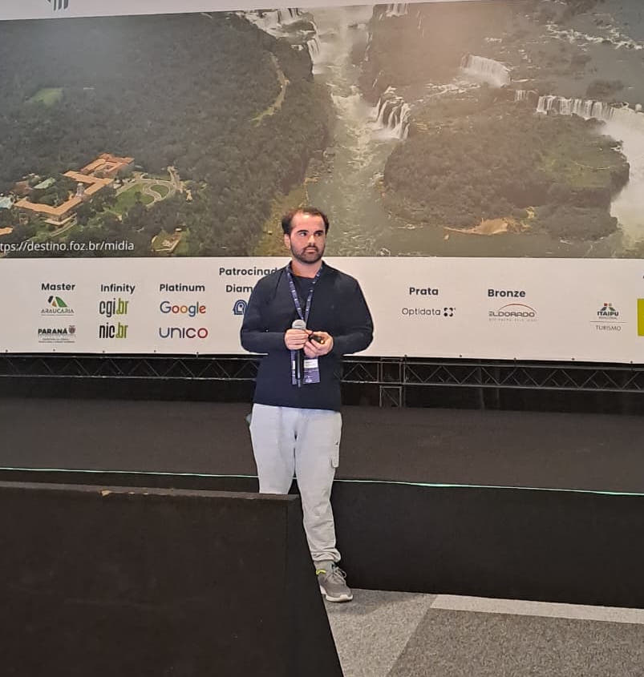

About
I'm a first-year Ph.D. student in the Institute of Computing at University of Campinas, advised by Prof. Hilder, based in Campinas, São Paulo.
I work on cryptography [...]
Outside of research [...]
Publications
Hardened CTIDH: Dummy-Free and Deterministic CTIDH
Progress in Cryptology – INDOCRYPT 2025
@inproceedings{banegas2025hardened,
title={Hardened CTIDH: Dummy-Free and Deterministic CTIDH},
author={Banegas, Gustavo and Hellenbrand, Andreas and Saldanha, Matheus},
booktitle={International Conference on Cryptology in India},
pages={194--215},
year={2025},
organization={Springer}
}Enhancing LoRaWAN Security: Addressing Static Root Keys with Post-Quantum Cryptography
Anais do XXV Simpósio Brasileiro de Cibersegurança 2025
@inproceedings{saldanha2025enhancing,
title={Enhancing LoRaWAN Security: Addressing Static Root Keys with Post-Quantum Cryptography},
author={Saldanha, Matheus de O and Giron, Alexandre A and Cust{\'o}dio, Ricardo and Idalino, Tha{\'\i}s B},
booktitle={Simp{\'o}sio Brasileiro de Seguran{\c{c}}a da Informa{\c{c}}{\~a}o e de Sistemas Computacionais (SBSeg)},
pages={367--383},
year={2025},
organization={SBC}
}